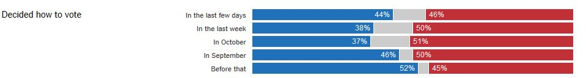

Processing the election
Collecting some things I've read over the last couple of weeks.
Why HRC lost - who voted for who
- First let's note that it's going to be a pretty big popular vote victory for HRC. This election is probably pretty close to a worst-case popular vote/EC split.
- The big story, as Nate Cohn puts it, is that "millions of white working-class voters across the United States voted for Obama and then switched to Trump."
- Of course, the "white working class" is over-broad. In the context of this election what's probably important is a particular subset in which Obama did well and HRC did not: "voters in northern states where unions, however diminished, still served to remind members of their Democratic roots (and build inter-racial solidarity)."
- I do wonder if it was literally the same people. It's anecdotal, but in the article linked above, many Trump voters interviewed are first-time, or first-time-in-a-long-time, voters. Perhaps a significant portion of Obama voters stayed home and were replaced.
- The influence of this group was surprising, in addition to being crucial, in part because there are more white voters than analysts thought. That is, the 2012 exit polls told a story about the composition of the electorate that undercounted both the white working class's turnout and support for Obama. In other words, Obama didn't win because of demographic shifts (from which there's no going back), he just won.
- Trump didn't lose women to the degree one might have expected/hoped. Although the vote seems to be historically stratified by gender, white women, according to exit polls, as a whole broke for Trump.
- Other turnout questions are still outstanding. For example it's not yet clear how Hipanics as a group voted--exit polls conflict with eve-of-election polling.
Why HRC lost - deeper causes
Just listing things worth reading here--don't necessarily agree with all.
- James Comey did it: “We lost with college-educated whites after leading with them all summer,” a Clinton spokesman, Brian Fallon, said on Wednesday. “Five more days of reminders about Comey, and they gravitated back to Trump.”
- I note that the exit polls at first glance support this story, but at second glance they may not. Trump won strongly among voters who reported deciding in October, and Comey's letter was released on October 28, so unless a lot of people made up their minds then and there and reported it as "in October", something else was going on in that group. 
- Facebook did it. It's fashionable to hate on Facebook, but: it's looking like they deserve it.
- HRC campaign's strategic decisions were not optimal. Mostly, going for a landslide by focusing TV resources on hammering at Trump's unfitness for office, rather than on HRC's strengths (which would fire up traditionally Dem voters), and ignoring upper Midwest states thought to be safe. Very very easy to play Monday morning quarterback though.
- Was the vaunted ground game not actually very good?. (For the record I think that much of this particular article is sloppy, unfair, and/or wrong. Nevertheless, it's interesting that there were far fewer field offices than in 2012. My personal experience in South Philly was that it was a well-run operation contacting the right people with pretty good data.)
- Because the left has slowly abandoned economic justic in favor of identity politics (No this link isn't to the Lilla op-ed. And I'm not sure what I think of this argument yet. What would it have looked like to not "abandon economic justice?" [Germany?] And was the left really incapable of focusing on both at once?)
- Obama lost touch and moved the machine for Hillary
- The role of party gatekeepers in the this election is interesting. On the GOP side, the gatekeepers were ineffective. On the Dem side, the gatekeepers were arguably effective but also arguably wrong in their choice. (For a sampling of the DNC-stole-it point of view, go read any Reddit thread about Bernie, e.g. this one).
What is going to happen?
- Why we should be afraid of the Trump presidency
- The authoritarians are in charge
- Yet the Constitution protects the losers
- Coming down the pike, maybe, is Paul Ryan's budget
- Big tax cuts for the wealthy
- Savage cuts for the poor
- I find it too depressing to think about other possibilities at the moment